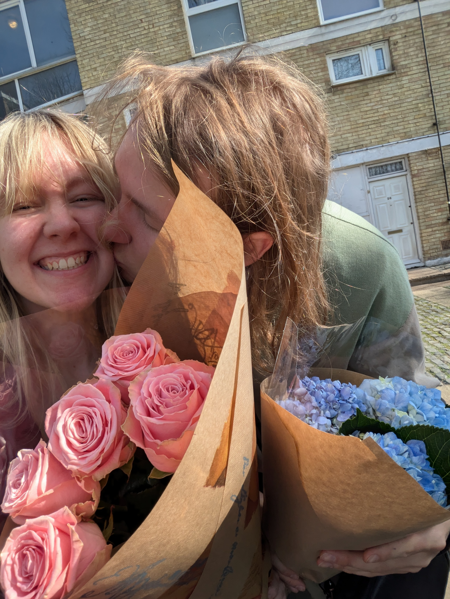
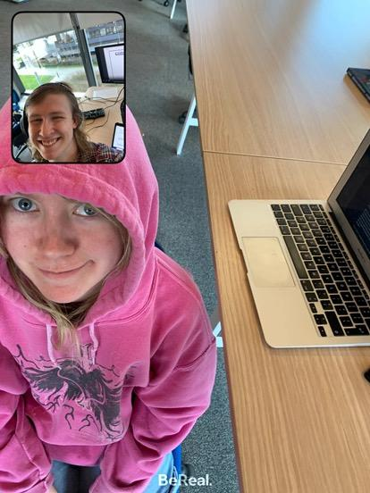
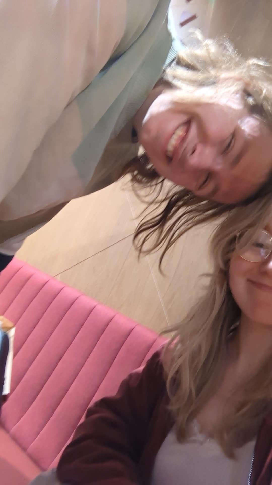
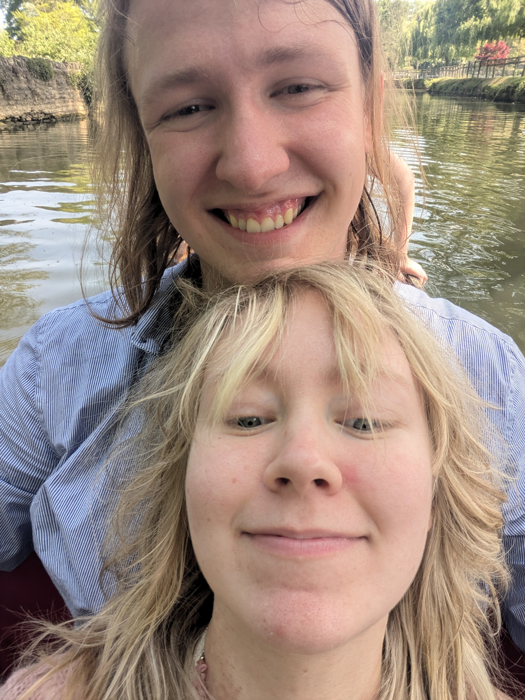
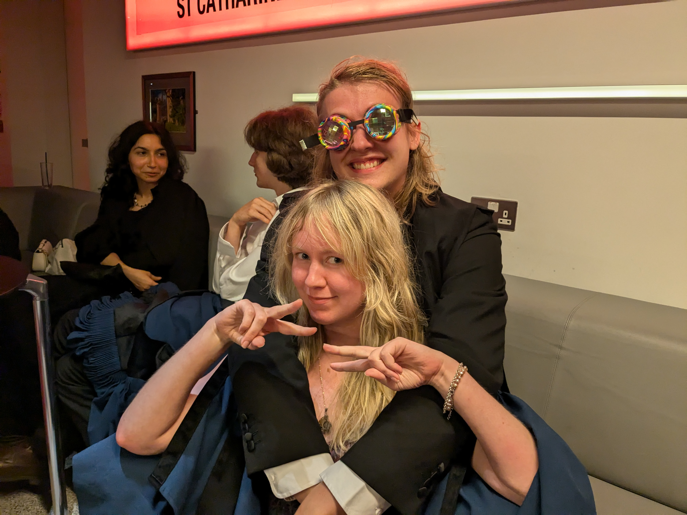
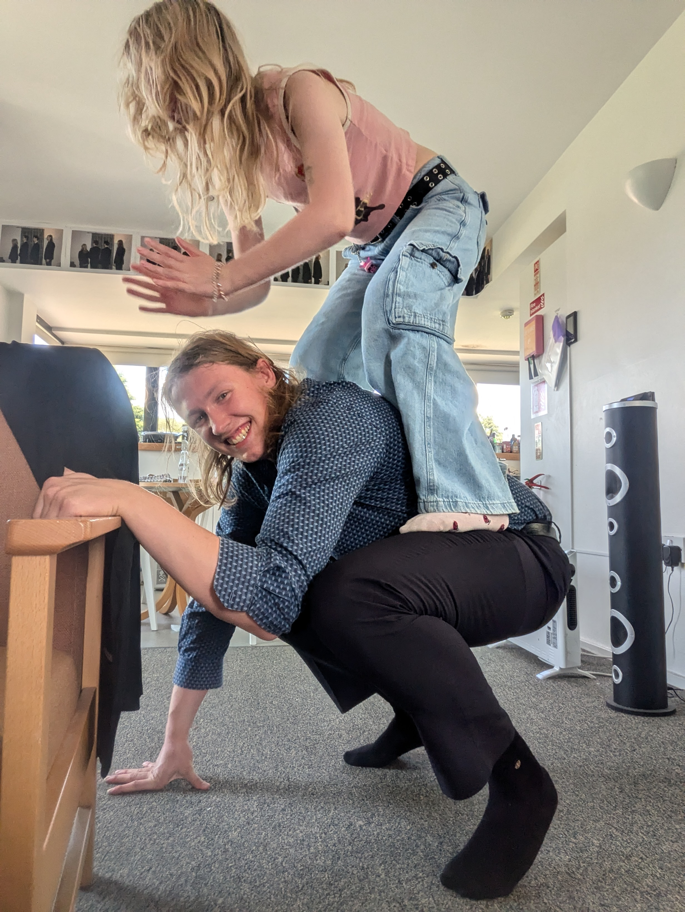
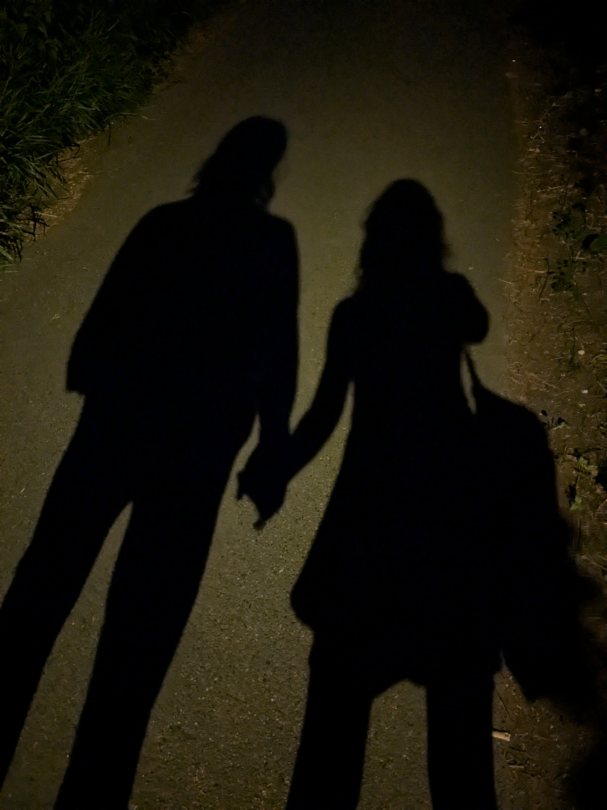
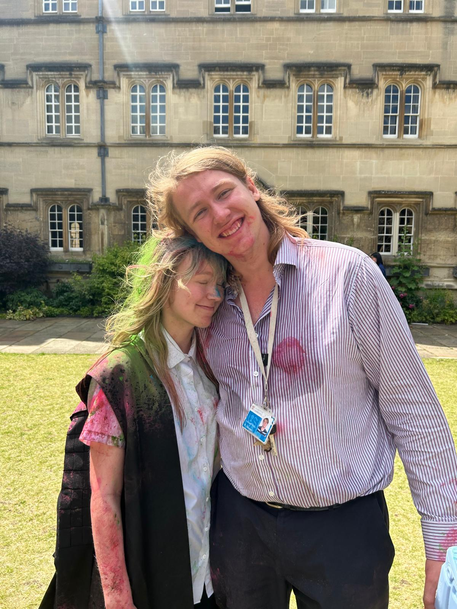

50 Reasons I Love William
       
He is the kindest person I have ever met (he even helped a bee land on a flower)
He has the cutest smile ever
He is so so funny
He goes up and down stairs with immense speed, it is deeply entertaining
He goes "I had a really cool idea today!" all the time, and his ideas are indeed always very cool
The divorced math teacher outfits
He has a very cute laugh
He sleeps with an abnormally large number of pillows and it is so sweet
He has very kissable lips
He gets to know the people who work in stores who most people just ignore
He has an unhinged number of daily average steps
He has very soft hair
He is so communicative
He is so thoughtful
He is so confident at leading things like Ensemble and Student Council (ignore the impeachment)
He always drinks choccy milk
He is unable to do things casually (programming, rowing, me, etc.)
He is so chatty (i love it)
He has very holdable hands
He pronounces words in cute ways
He takes care of our stardew animals and crops
He reads reels out loud when we are together and it is very cute
He helped me make my first worm website!
He is a hoarder (it is cute, he kept a bus ticket from when he visited me)
He always writes in cards as a stream of consciousness about what he's doing in that particular moment
He has very nice arms, I like to hold and lay my head on
He is so earnest/sincere
He is so supportive of anything I want to do and makes me feel like I can be more confident
His creeper mushroom spore headcanon
He is so observant of everything around him
He gives the best cuddles
He has beautiful eyes
He introduced me to yummy Norwegian cheeses
He does not listen to the same songs all the time, I have never met anyone else who is like this
He is so empathetic
He is the least judgmental person I know
He makes funny noises with me and does not think I'm strange
We get to do LEGO together
He scratches my back and head omnomnmnmmmmmmmmmmmmmmmm
He makes me feel safe, I would trust him with anything
He shares his interests with me and takes the time to explain bits I don't understand
He always makes time to talk to me even when he's busy
He shows me cool videos like Double King and Jacob Geller
He gets snacks I can eat in case I want some (even though it is probably very annoying)
We never argue compared to every other couple I know
He always remembers stuff I've told him
He looks really cute when he's sleeping
He makes me excited for the future
I can be completely myself around him
I genuinely cannot conceive of someone better than him
Your browser does not support the audio element.